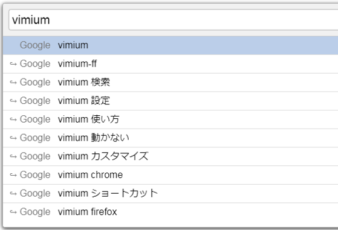

Search Completion
Vimiumはカスタム検索エンジン(デフォルトの検索エンジンではありません。)の検索補完をサポートしています。 検索補完は、カスタム検索エンジンのURLが、 Vimiumに組み込まれた補完エンジンと一致するたびに有効化されます。
検索補完を有効化するには、oを押してVomnibarを起動し、
設定したキーワード('w'など)を入力してから、スペースを入力します。
ここでは2つの例で、Vomnibarが検索補完をどのように表示するかを示します。

利用可能な補完検索エンジン
補完が利用可能なカスタム検索エンジンの例を以下に示します。
# Wikipedia.
w: http://en.wikipedia.org/w/index.php?title=Special:Search&search=%s Wikipedia
# Google.
g: https://www.google.ie/search?q=%s Google
l: https://www.google.ie/search?btnI&q=%s I'm feeling lucky...
gm: https://www.google.ie/maps?q=%s Google maps
# Youtube.
y: http://www.youtube.com/results?search_query=%s Youtube
#DuckDuckGo
d: https://duckduckgo.com/?ia=about&q=%s DuckDuckGo
# Amazon
az: http://www.amazon.co.uk/s/?field-keywords=%s Amazon
# Dictionary (Merriam-Webster).
dw: http://www.merriam-webster.com/dictionary/%s Merriam-Webster
# Bing
b: https://www.bing.com/search?q=%s Bing# Wikipedia日本語版
w: https://ja.wikipedia.org/wiki/?title=Special:Search&search=%s Wikipedia
# Amazon Japan
az: https://www.amazon.co.jp/s/?field-keywords=%s Amazon補完エンジンのコントリビュート
補完エンジンを提供するプルリクエストは大歓迎です。
補完エンジンを書くのは難しくありません。
以下に例を示します。
class DuckDuckGo extends RegexpEngine
# 検索URLの例: https://duckduckgo.com/?q=%s
constructor: -> super "^https?://([a-z]+\.)?duckduckgo\.com/"
getUrl: (queryTerms) -> Utils.createSearchUrl queryTerms, "https://duckduckgo.com/ac/?q=%s"
parse: (xhr) ->
suggestion.phrase for suggestion in JSON.parse xhr.responseTextより詳しい内容や、例はこちらを参照してください。
デフォルトの検索補完
検索補完はカスタム検索エンジンでのみ利用可能です。既定の検索エンジンでは利用できません。 それでも既定の検索エンジンをカスタム検索エンジンとして追加することで、 検索補完することができます。
g: https://www.google.com/search?q=%s Google# Inboxで使うとしたら
ib: https://inbox.google.com/u/0/search/%s Inbox© 2010 Phil Crosby, Ilya Sukhar. See MIT-LICENSE.txt for details.
このコンテンツはPhil Crosby(philc)、Ilya Sukhar(ilya)によるVimiumドキュメントを翻訳/改変したものです。